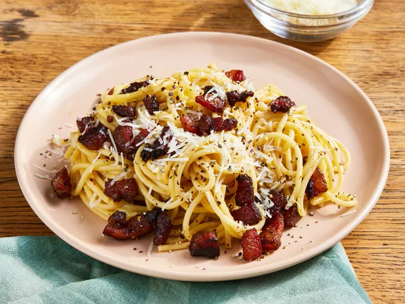

Spaghetti alla Carbonara

Description
Ingredients
These are the simple ingredients you'll need to make homemade
spaghetti alla carbonara recipe:
-
Oil: This traditional Italian recipe starts with olive
oil.
-
Guanciale: Buy guanciale (or cured pork cheek) at your
local butcher. If you can't find it, you can substitute unsmoked
bacon or pancetta.
-
Spaghetti: Use store-bought or homemade spaghetti
noodles. If you like, you can substitute bucatini for the spaghetti.
- Eggs: Three large eggs add richness and flavor.
-
Cheese: Opt for hand-shredded Pecorino Romano cheese.
You can substitute Parmesan, if preferred.
-
Seasonings: This flavorful spaghetti alla carbonara is
simply seasoned with salt and pepper.
Steps
You'll find the full, step-by-step recipe below (with photos) — but
here's a brief overview of what you can expect when you make
traditional spaghetti alla carbonara:
-
Cook the pork in olive oil until browned and crispy, then drain on paper
towels.
-
Boil the spaghetti in salted water. Drain and return to the pot. Let
cool.
-
Whisk the eggs, 1/2 of the cheese, and some pepper in a bowl until
smooth.
-
Pour the egg mixture over the pasta, stirring quickly, until creamy.
-
Stir in the pork, then top with the remaining cheese and more black
pepper.
- Notes and tips from the chef:
Chef's tips:
Ask somebody to hold the pot so you can stir pasta quickly while pouring
the egg mixture over it. Please note the addition of reserved pasta water
when using the magazine version of this recipe.
Carbonara is made with guanciale (cured pork), eggs, Pecorino Romano
cheese, spaghetti pasta, and lots of black pepper. Italians don't add
extra ingredients like cream, milk, garlic, or onions. Try this recipe if
you want to make an authentic, creamy carbonara that comes straight from
Italy, where I live. Buon appetito!
This is a different reciepe than
Spaghetti Carbonara
Home